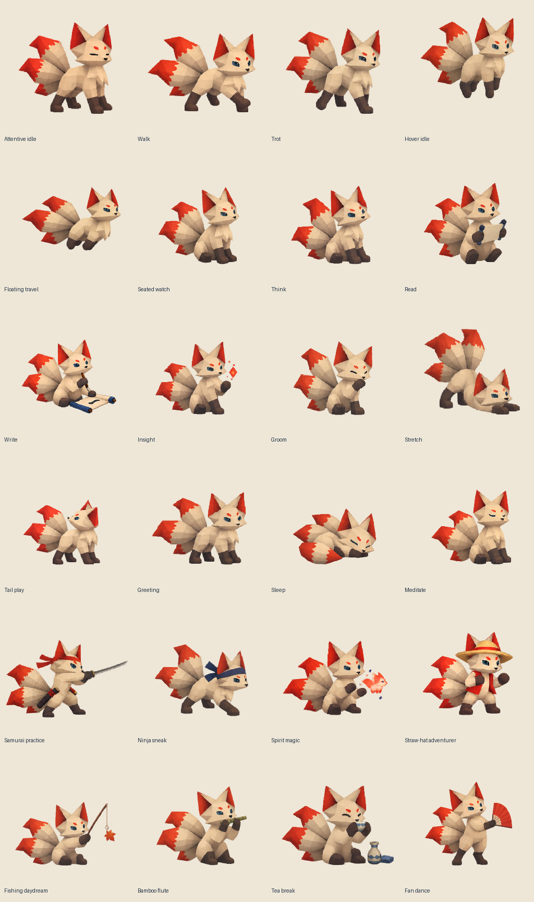

KŌ · V1.3 · ANIMATION ASSETS
Kōくん, in polygons.
The complete PS1 Kōくん animation library. Four limbs total—two forelimbs and two hindlimbs—and three tails. Inspect each frame, slow the motion, mirror it, and test transparency on different backgrounds.
24 routines56 combinable clips672 transparent frames256 × 256 source frames
Background
Six shared transitions
Connected sequences
These combine compatible clips. These exercise shared poses and activity joins. The extension also applies roaming, dragging and hover lookups.
All 24 routines
